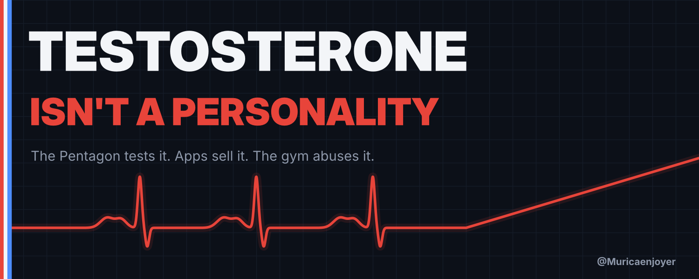

Testosterone Isn't a Personality
The Pentagon tests it. Apps sell it. The gym abuses it. Here's what's actually true.
Earlier this month the Secretary of War did a workout with Marines at Miramar, and the internet clipped the part where he couldn't keep up. Soon people were calling him "Low-T Pete."
That's a joke, not a diagnosis. Nobody on X has seen the man's bloodwork.
But the joke landed because of everything around it. In July, Pete Hegseth posted a video called "The High-T Department of War" and ordered testosterone screening for troops 30 and older. On Sept. 30, in front of about 600 troops at Quantico, he said this:
"The ideological clowns are out. The patriotic cowboys are in with testosterone testing on top."
Three days later, Joey Swoll, the gym-etiquette guy with millions of followers, was rushed to the hospital for his heart. It was his third heart scare since 2023. His replies turned into a steroid trial. On Oct. 13 he told his followers he'd been discharged and cleared for light workouts.
And if you scroll long enough, the ads find you. Tired? Low drive? Your T might be low. $99 a month. Shipped to your door.
So here's the question every guy reading this is quietly asking. Is my testosterone actually low? And should I care?
I went through the studies, the Pentagon's own guidance and the death data. Here's what's real.
I'm a Marine veteran. I was a UH-1Y crew chief. I've been around the warrior talk long enough to know the difference between strong and loud.

The decline is real. It's also smaller than you've heard.
Start with the good news for the panic crowd: they're not making it up.
Researchers pulled federal health survey data on 4,045 American men aged 15 to 39. Average testosterone was 605 ng/dL in 1999–2000. By 2015–16 it was 451. That's about a 25% drop. And it isn't only because we got heavier. Normal-weight men dropped too, from 665 to 529.
It shows up elsewhere. In Boston, men's levels fell about 1.2% a year from 1987 to 2004, beyond what aging explains. In Finland, men in their 60s born after World War II had far less testosterone than men the same age born around World War I.
Now the bad news for the panic crowd. In 2025, RFK Jr. went on Fox and said, "A teenager today, an American teenager, has less testosterone than a 68-year-old man." He said levels had "dropped 50 percent."
No. The best U.S. data shows about 25%, with a catch: the labs changed testing methods between survey years, and the low point was 2011–12, with a small rebound after. Young men's average is still well above 300 ng/dL, the line doctors use for "low."
So it's a real trend and a real reason to care. It's not a reason to panic-buy a vial.

The Pentagon goes "High-T"
On July 15, Hegseth posted the video. The memo behind it made testosterone screening mandatory in the annual health assessment for active-duty and reserve troops 30 and older. Under 30, you can ask for it. Treatment stays optional.
His pitch was that it's "not about artificial enhancement; it's about restoring and optimizing your natural capabilities."
Fair enough. Men with real deficiency exist, and some of them wear uniforms. Checking a symptomatic man's levels is normal medicine.
Then the rollout happened.
About 2 million troops are 30 or older. No cost estimate was given, and no funding source was named. On Sept. 2 the Defense Health Agency posted the clinical guidance. On Sept. 3 it was gone, "temporarily rescinded." A Hegseth adviser said the draft had been posted "inadvertently."
On Sept. 17 it came back, for men only. And here's the part almost nobody read. The Pentagon's own guidance says testosterone "is not a performance enhancer." It says the evidence doesn't support using it to improve energy, vitality, physical function or cognition.
Read that again. The "High-T Department of War" published a document saying T isn't a performance drug.
Doctors weren't surprised. Four of six physicians Military Times consulted saw no solid evidence that universal screening improves readiness. The Endocrine Society warned it would produce "a high number of false positives." Georgetown's Adriane Fugh-Berman put it bluntly: "It's ridiculous to screen a population for a questionable condition which has a treatment with unproven benefits and proven risk."
The guidance itself is more sensible than the speech. It starts with a symptom questionnaire. Blood gets drawn only if that's positive, in the morning, against a 300 ng/dL line.
That's not "testosterone testing on top." That's a doctor's visit.
The gold rush
While the Pentagon was posting videos, the market was already moving.
Testosterone prescribing fell off a cliff after a 2013 heart study and FDA warnings. It's back. Epic Research looked at 109 million men. In 2013, 0.83% had a testosterone prescription. That fell to 0.64% in 2021, then hit 0.93% in 2025. Every age group 30 and up is now above its old peak. Total U.S. testosterone prescriptions went from 7.3 million in 2019 to more than 11 million in 2024.
The apps saw it coming. Hims & Hers launched low-T treatment in September 2025 at $99 to $199 a month. Fun detail: it launched with enclomiphene, which isn't testosterone.
And the people selling it to you in your feed? Researchers studied 46 high-reach testosterone posts on Instagram and TikTok. 72% of the accounts had a financial tie to what they were pushing. 31% of the influencers claimed to be doctors. Zero posts cited evidence. Zero.
Washington is loosening the rails too. In 2025 the FDA removed the heart-risk language from testosterone's boxed warning and added a blood-pressure warning. In June, HHS asked manufacturers to drop the label limit on age-related low T. And the federal rule that lets apps prescribe controlled drugs like testosterone without ever seeing you in person runs out Dec. 31.
None of this makes TRT a scam. It means you're a customer.

What TRT actually does (and doesn't)
The best safety evidence is the TRAVERSE trial: 5,246 men aged 45 to 80 with low T and heart risk, half on testosterone gel and half on placebo.
Heart attack, stroke or cardiac death: 7.0% on testosterone, 7.3% on placebo. No difference. That's real good news for men who need it.
The same trial found more atrial fibrillation on testosterone, 3.5% against 2.4%, and more acute kidney injury, 2.3% against 1.5%. And there's that new blood-pressure warning.
Then there's the side effect nobody puts in the ad. Testosterone shuts down sperm production. In a World Health Organization trial, 65% of healthy men on weekly testosterone shots had zero sperm within six months. It works so well it was tested as birth control. Most men recover after stopping, but it takes time: in a large review, 67% were back to a normal-range count at six months and 90% at a year.
If you want more kids, that matters. Have that conversation before the first shot, not after.
It also thickens your blood. Doctors are told to stop or cut the dose if your hematocrit goes above 54%.
So what does "low T" actually mean? The American Urological Association's answer is total testosterone under 300 ng/dL on two separate early-morning tests, plus symptoms. One low number at 4 p.m. isn't a diagnosis. Neither is feeling tired.
That difference is the whole game. About 29% of American men have a "low" lab number on its own. Only about 5.6% of men 30 to 79 have symptomatic deficiency. The gap between those two numbers is where the money is.


The gym's open secret
There's TRT, and there's "TRT."
A replacement dose brings a deficient man back to normal. A lot of what the gym calls TRT is a blast with a prescription for cover. Same vial, different drug.
The data on the second one is ugly.
A 2025 European Heart Journal study followed 20,286 male bodybuilding competitors. 121 died. Their average age at death was 45, and 38% of those deaths were sudden cardiac death. Pros had 5.2 times the sudden-cardiac-death risk of amateurs. Autopsies often found enlarged hearts.
In Denmark, men caught using steroids at gyms died at a rate of 2.8% over about 11 years, against 1.0% for men who didn't. Their heart-attack risk was about three times higher. Heart failure, about 3.6 times.
The names keep coming. Former Mr. Olympia Shawn Rhoden died of a heart attack at 46. Illia "Golem" Yefimchyk died at 36 after what his wife described as a heart attack. Mexican bodybuilder Einar Méndez collapsed at a gym last month at 48.
Which brings us back to Joey Swoll.
First: I'm glad he's out of the hospital, and I hope it sticks. Whatever you think of his videos, he's a man with a heart problem, and nobody should be cheering in his replies.
Second: no cause has been disclosed, and he doesn't owe anyone one. He's said before that doctors found genetic irregularities in his heart, and a 2024 angiogram turned into a six-hour emergency procedure after part of a tool broke off inside. He's also said he's "never claimed to be natural." We don't know what's driving this, and neither do the people diagnosing him in the comments.
What we do know is the pattern in the big studies. It doesn't care how many followers you have.

How to actually raise your T
Here's the boring part. It's also the part that works.
- Sleep. In a University of Chicago study, healthy young men who slept under five hours a night for one week saw their daytime testosterone fall 10 to 15%. One week.
- Lose the gut. A review of weight-loss studies found testosterone rose about 83 ng/dL on a low-calorie diet, where men lost around 10% of their weight, and about 250 ng/dL after bariatric surgery. The more weight they lost, the more it rose.
- Lift. Heavy compound lifts, done consistently. You don't need a study to tell you that's good for you, so I won't fake a number.
- Test it right. Two early-morning blood draws on different days. If you're under 300 with real symptoms, see a real doctor, not a checkout page.
- If you're truly low, TRT is legit. Men with real deficiency get their lives back on it. Go in knowing the trade-offs: fertility, blood counts, blood pressure and the monitoring that comes with all of it.
Strong was never a lab value
Here's what bugs me about all of it.
We took a hormone and turned it into a personality. The Pentagon is selling it as a vibe. The apps are selling it as a subscription. The gym is selling it as a shortcut.
Strong was never a lab value. Strong is the guy who sleeps, can see his belt buckle, lifts heavy a few times a week, and carries his neighbor's couch up the stairs without being asked twice.
That's the real High-T Nation. It's free. It's boring. And it works.
Call Pete whatever you want. Then go to bed.
If this was useful, repost it so the next guy reads this before he reads an ad.
Sources
- NHANES decline: Lokeshwar et al., European Urology Focus, 2021 — pubmed.ncbi.nlm.nih.gov/32081788
- Boston trend: Travison et al., J Clin Endocrinol Metab, 2007 — pubmed.ncbi.nlm.nih.gov/17062768
- Finland cohorts: Perheentupa et al., Eur J Endocrinology, 2013 — pubmed.ncbi.nlm.nih.gov/23161753
- RFK Jr. claim and context: NBC News — nbcnews.com/health/mens-health/rfk-jrs-warnings-sperm-counts-fuel-doomsday-claims-male-fertility-rcna216062
- "High-T" policy: NBC News; Military Times (Jul 15, 2026)
- Guidance pulled and reissued: ABC News (Sep 3); CNN (Sep 4); Defense Health Agency guideline (Sep 17); Center Square (cost, "not a performance enhancer")
- Doctors' reactions: Military Times (Jul 19); The Hill (Fugh-Berman)
- State of the Force transcript: war.gov (Sep 30, 2026)
- Prescribing: Epic Research (Jul 29, 2026); IQVIA via CNBC (Jul 20, 2026)
- Hims launch: Bloomberg (Sep 10, 2025)
- Influencer study: Social Science & Medicine, 2026 (University of Sydney)
- FDA labeling (Feb 28, 2025): fda.gov · HHS request (Jun 18, 2026): hhs.gov · DEA telemedicine rule: Federal Register
- TRAVERSE: Lincoff et al., New England Journal of Medicine, 2023
- Low-T definition: American Urological Association guideline · Prevalence: Araujo et al., JCEM 2007
- Fertility: WHO Task Force, The Lancet, 1990; Liu et al., The Lancet, 2006 · Hematocrit: CMAJ
- Bodybuilder mortality: Vecchiato et al., European Heart Journal, 2025 · Danish steroid users: JAMA 2024; Circulation 2025
- Joey Swoll: his Oct 5 post; his Oct 13 discharge update via Generation Iron — generationiron.com/joey-swoll-returns-to-gym; Generation Iron; Fitness Volt
- Sleep: Leproult & Van Cauter, JAMA, 2011 · Weight loss: Corona et al., Eur J Endocrinology, 2013